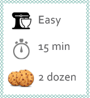

Quick Chocolate Chip
A classic with a dash of thinking-outside-the-box
Ingredients
- 1 package of chocolate chip cookie dough
This recipe works well for when you have a time-crunch problem, but still want to appear as though you put forth some effort in the kitchen.
Preheat the oven (to whatever temperature the package calls for, probably about 375 degrees). If your oven is anything like mine, it could take up to 15 minutes for it to actually get up to the right temperature. You might want to have an oven thermometer on hand just to double-check it.
Gather the “ingredients”. You want to make sure that you have the proper package (no one wants to bite into a cookie thinking it’s chocolate chip only to find out it’s oatmeal raisin). While not an ingredient, be sure to have two cookie sheets on hand (along with parchment paper if you don’t really want to have to clean up).
Open the package.
(For tube) Grab a knife and proceed to cut off 1/4” thick slices (or whatever the package says) then put the discs of dough onto the baking sheets, spaced out so they won’t bake together into one giant cookie (unless that’s what you want, in which case, more power to ya).
(For square package) Break off the pre-determined squares of dough and place them onto your baking sheets, evenly spaced so they won’t run together as they bake.
Set the timer for however long the package says (usually 4 minutes then flip the cookies to the other rack, top on bottom and bottom on top).
Set up your cooling racks. Due to the lack of counter space, you might just have to squeeze all of the cookies onto one rack. Or you can get a handy-dandy rack stand like I did and have multiple racks only take up the space of one.
Remove cookies from the oven when done. Grab a spatula and move the cookies onto the cooling racks. Turn off your oven, and let the cookies cool. If you time it right, the cookies can be cooling on the rack, wafting that “just baked” smell into the apartment as your friends walk in, amazed you had time and space to bake the cookies yourself.